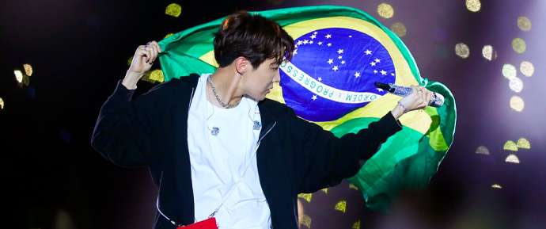

No início dos anos 2010, a empresa era pequena e tinha poucos recursos para dar aos artistas.
Os sete integrantes moravam em um dormitório e passavam a maior parte do tempo juntos.
O nome BTS trata-se de um acrônimo para Bangtan Sonyeondan, que quer dizer “escoteiros à prova de balas”
O grupo debutou oficialmente em 13 de junho de 2013, com o mini-álbum 2 Cool 4 Skool,
e a title song (música de trabalho) No More Dream. No mesmo ano, o BTS fez mais dois lançamentos,
com as músicas N.O, do mini-álbum O!

O sucesso internacional do grupo começou por volta de 2015, quando lançou o single intitulado “I Need U”,
que quebrou vários recordes e ganhou uma série de prêmios. O single faz parte do EP The Most Beautiful Moment in Life Pt. 1,
que ajudou o grupo a ganhar um público gigante que começou a crescer ao redor do mundo.

No Brasil, os ídolos sul-coreanos estiveram em 2014, 2015, 2017 e 2022.
Os ingressos dos Shows da BTS em 2024 são vendidos por diferentes canais como
Uhuu, Sympla, Eventim, viagogo, entre outros.
Jungkook se tornou o primeiro artista do gênero a se apresentar em um evento de abertura de Copa.
Ele cantou e dançou ao lado de bailarinos a música "Dreamers", lançada exclusivamente para o Mundial do Catar.
O cantor catari Fahad Al-Kubaisi se juntou a ele durante a apresentação.